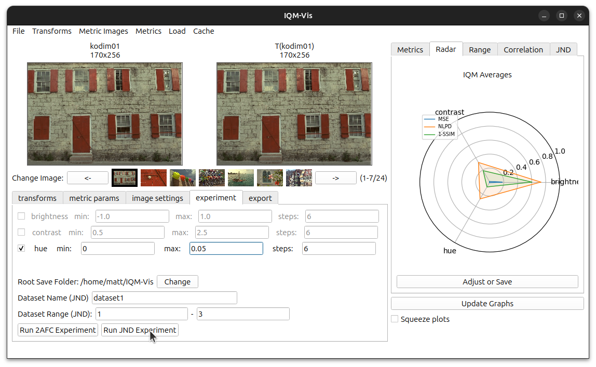
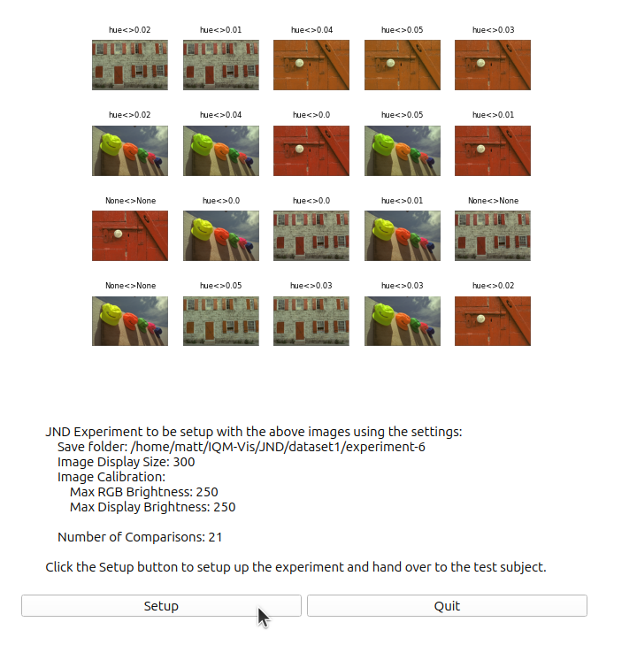
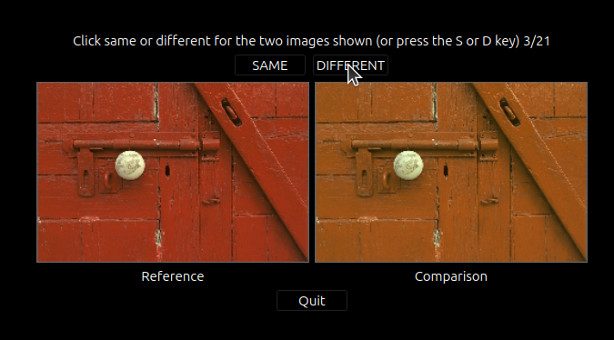
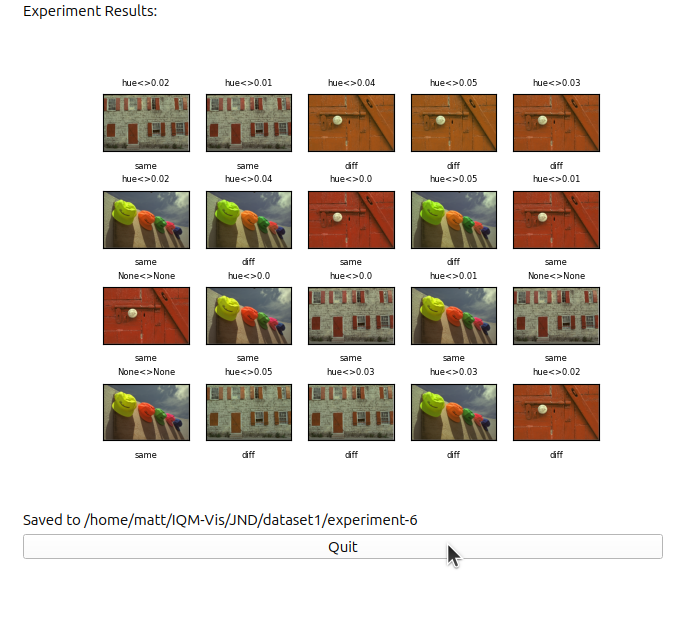
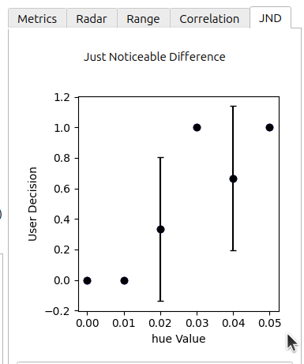

View the whole notebook: https://github.com/mattclifford1/IQM-Vis/tree/main/dev_resources/docs/notebooks/Tutorial_5-running_a_JND_experiment.ipynb
Tutorial 4: Running a JND Experiment
In this tutorial we will go through how to setup and run a Just Noticable Difference experiment.
First you need to Launch the UI with your required customisations (see previous tutorials).
Things to setup: - Load your own dataset of images
Select the range of images in the dataset to be used within ‘Dataset Range (JND)’
Make sure that the settings are correct in the ‘image settings’ tab (Image Display Size, Luminance Calibration etc.)
Only ONE transform is selected in the ‘experiments’ tab with the correct range and number of steps
Check that the Root Save Folder is correct
Name the dataset for use with save folder naming by ‘Dataset Name (JND)’
Once you are ready, press the ‘Run JND Experiment’ button, this will launch the experiment:
Experiment Screen
The first screen will show the settings and images used for the experiment. Double check the Save folder matches what the experiment type and image name, a unique experiment number will be generated based on any saved experiments that use the same dataset name but use different transforms or processing etc.
The first 25 images will be shown to get an idea if everything is correct.
The Number of Comparison shows how many clicks the user will to do.
If everything is correct, click the ‘Setup’ button. This will take you to the experiment information screen for the participant to read.
Experiment Info
This will show the information for the participant. When they are ready, click the ‘Start’ button.

Experiment Running
The user needs to click the ‘same’ or ‘different’ button based on whether they think that the comparison images is the same or not as the reference image.
Note: users can also press the ‘S’ and ‘D’ keys on the keyboard to make their decisions.
Experiment Finished
The save folder shown contains the experiment images and a csv file with all the experiment runs
Visualising the experiment results
The experiment results will be automatically loaded into the ‘JND’ tab in IQM-Vis
This shows the user(s) decisions over the transform’s parameter range.
For example here, only 0.02 hue and above can be detected by humans.
If you repeat the experiment with a new participant just click ‘Run JND Experiment’ again and the results will be merged into the existing database.